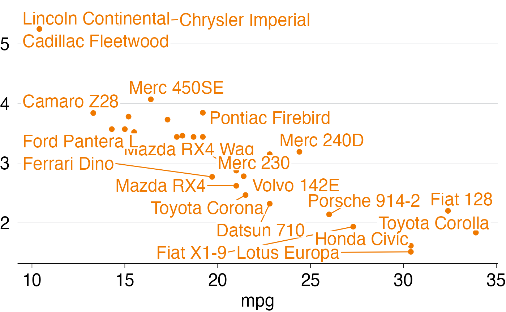

Create labels in the Grattan style - no border, minimal padding
grattan_label_functions.Rd`grattan_label()` and `grattan_label_repel()` create labels using `ggplot2::geom_label()` and `ggrepel::geom_label_repel()` respectively. The labels will have no border and minimal padding, in keeping with Grattan Institute's visual style.
grattan_label( ..., size = 18, padding = 0.1, lineheight = 0.8, label.size = 0, fill = "white" ) grattan_label_repel( ..., size = 18, padding = 0.1, lineheight = 0.8, label.size = 0, fill = "white" )
Arguments
| ... | Arguments passed on to either `ggplot2::geom_label()` (in the
case of `grattan_label()`) or `ggrepel::geom_label_repel()` (in the case of
`grattan_label_repel()`). See |
|---|---|
| size | Font size for label. Default is 18. |
| padding | Amount of white padding around label, measured in "lines"
(see |
| lineheight | Height of lines of text - smaller means the lines of text are closer together. Default is `0.8`. |
| label.size | Default is `0`. |
| fill | Colour of label background; default is `"white"`. |
Details
`grattan_label()` labels, just like `ggplot::geom_label()` labels, will be places at the x, y coordinates given by the data. `grattan_label_repel()` labels, just like `ggrepel::geom_label_repel()` labels, will be placed near their x, y coordinates, but will be places so that the labels don't overlap each other.
Examples
library(ggplot2) # Create a dataset -- mtcars with rownames as column mt <- mtcars mt$car <- rownames(mt) # Create a plot without labels p <- ggplot(mt, aes(x = mpg, y = wt, label = car)) + geom_point() + theme_grattan() # A chart with Grattan labels p + grattan_label()# A chart with Grattan labels that are repelled from each other p + grattan_label_repel()